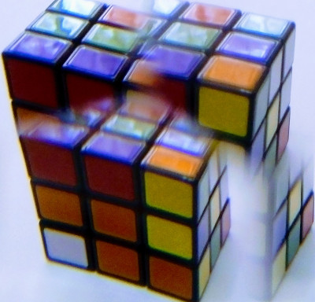

Art. Technology. Life

Блог Александра Воронкова
Заметки
Книги о которых я упоминал на набросках (1)
(12 май 2018)
#книгиокоторыхяупоминалнанабросках
Я иногда на набросках в Цоколе рассказываю всякие интересные вещи, Далее
Ценности
(08 май 2018)
#ценности
(Немного утопических рассуждений). Далее
Против
(06 май 2018)
#против
В последнее время происходит всяких общественно-политических акций, но они имеют очень маленький КПД. Далее
Инструменты
(14 апр 2018)
#инструменты
С инструментам, на самом деле беда - они очень плохо развиваются. Далее
Инструменты и расходные материалы
(06 апр 2018)
#инструменты
Я условно разделяю все свои расходы на 2 категории: Инструменты и Расходные материалы. Далее
Парадокс ерунды
(05 апр 2018)
#работа #award
Есть интересное наблюдение, которое мне хочется назвать Парадоксом Ерунды. Далее
Двигатель прогресса
(03 апр 2018)
#лень
(Немного очевидных рассуждений.) Далее
Клиентоориентированность
(03 апр 2018)
#like
Сегодня практически все системы ориентированы на получение "лайков". Далее
Заметка 3
(2 апреля 2018)
#music #technology #life
В какой-то момент на меня снизошло озарение, что музыка - это тоже часть жизни. Далее
Заметка 2
(1 апреля 2018)
#punk
Мне когда-то попалась на глаза книжка "Философия панка: больше чем шум". Там описывается "панк" как Do It Yourself культура. То есть, настоящий панк должен уметь собрать то, что ему нужно "в гараже, на коленке" без помощи крупных лейблов, корпораций, правительства и так далее. Далее